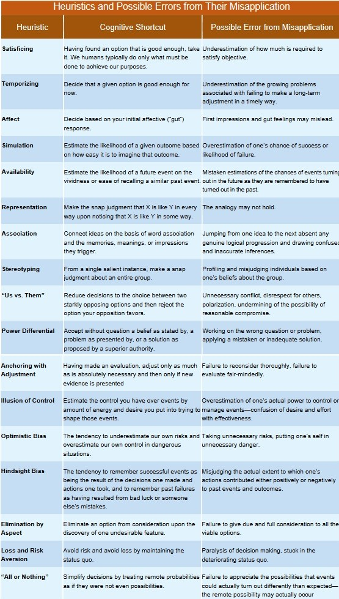

Understand Cognitive Heuristics and Possible Errors
- Cognitive heuristics are natural human decision-making shortcuts we all rely upon in real life to expedite our judgments about what to believe or what to do
- Misapplication of heuristics may result in mistaken snap judgments
- We can avoid misallication of heuristics by applying our self-regulation critical thinking skill to monitor and to correct our decision-making process
